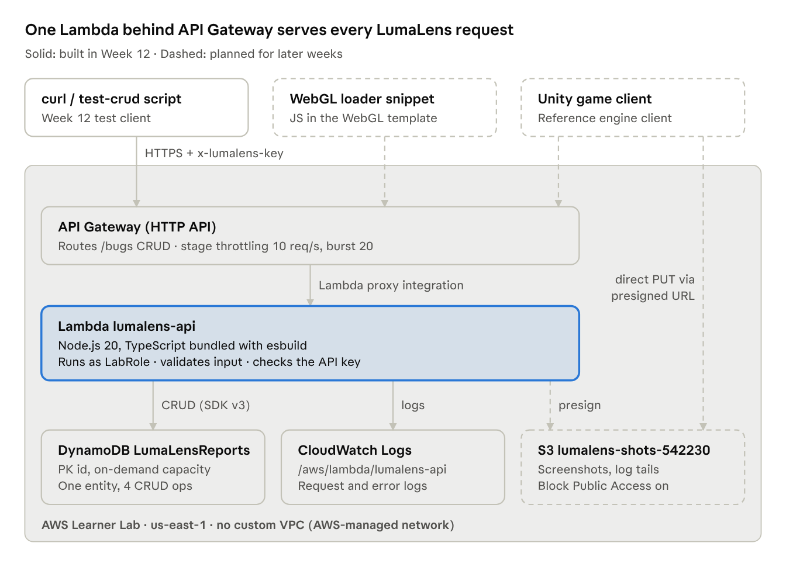

Some bugs only appear in the built game, never in the editor, and often show no visible error. In my own project, buildings that block the player should turn see-through: it works in Play Mode but not in the build, with no console error (likely a stripped shader variant). In a game jam the build goes to itch.io at the last minute, and players report vaguely, if at all.
In-game bug reporting is a crowded space: Unity User Reporting (Unity only), BetaHub and Bugnet (hosted SaaS), Codecks (project management first) and Asset Store reporters (forward reports to Trello/Jira/Discord, no build analysis). We did not find a tool that combines an engine-agnostic HTTP API that you self-host on your own AWS with three features aimed at build-only bugs: automatic exception capture, an editor↔build environment diff, and a WebGL loader-error snippet.

/bugs. HTTP API was chosen over REST API because it is cheaper and simpler and we need no REST-only features.lumalens-api (Node.js 20, TypeScript bundled with esbuild, ~116 KB zip) routes,
validates with zod, checks the API key and talks to DynamoDB with AWS SDK v3. The SDK comes from the runtime, so it is not bundled.LumaLensReports, partition key id, on-demand capacity: no servers, and we pay per request.internal_error.| When | Feature |
|---|---|
| Week 12 (this) | BugReport CRUD, API key check and validation, provisioned and tested on AWS. |
| Week 13+ | Unity client: auto exception capture, editor↔build diff, Player.log tail + screenshots to S3 (presigned). |
| Week 14+ | WebGL loader-error snippet (reports “game won’t load” before Unity starts); CORS for browser clients. |
| Out of scope | Crash dump symbolication, user accounts, team permissions, a project management board. |
One entity, BugReport. Required: title (1–120), severity (low/medium/high/crash),
engine (unity/godot/unreal/web), runContext (editor/build), buildVersion (≤32),
platform (windows/webgl/android/linux/mac). Optional: description, scene,
posX/Y/Z + coordSpace (2d/3d), envSnapshot, logKey, screenshotKey.
Defaults: status = open, source = manual. The server sets id (UUID),
createdAt and updatedAt. Create is strict: unknown or server-owned fields return 400. The full contract
is in docs/openapi.yaml (OpenAPI 3.0.3, linted with Redocly), and every engine client follows it.
| Operation | Route | Success | Errors |
|---|---|---|---|
| Create | POST /bugs | 201 + item | 400, 401 |
| Read | GET /bugs (?status=, ?buildVersion=) · GET /bugs/{id} | 200 list (newest first, ≤500) / item | 400, 401, 404 |
| Update | PUT /bugs/{id} (only status, severity, description) | 200 + updated item | 400, 401, 404 |
| Delete | DELETE /bugs/{id} | 204 | 401, 404 |
Conditional writes (attribute_not_exists / attribute_exists) turn a missing item into a 404 instead of creating it by accident. GET /bugs uses a Scan at personal scale. The scaling path is a GSI on status or buildVersion.
| Area | Actual (Learner Lab) | Intended (production) |
|---|---|---|
| Lambda role | LabRole. Learner Lab cannot create IAM roles, and LabRole is broader than needed. | Custom role: dynamodb:PutItem/GetItem/Scan/UpdateItem/DeleteItem on the LumaLensReports ARN only; s3:PutObject on lumalens-shots-542230/screenshots/* and /logs/* only; basic CloudWatch Logs. |
| API GW → Lambda | Resource-based policy added by the integration | Same |
| Client auth | x-lumalens-key header compared in constant time with the LUMALENS_KEY env var. The key ships inside builds and can be extracted. |
Cognito JWT authorizer, or one key per project so that a leaked build can be revoked on its own |
| S3 (planned) | Block Public Access on; uploads only via short-lived presigned URLs (image/png, text/plain) | Same, plus a lifecycle rule to expire old logs |
| AWS credentials | Only in ~/.aws/credentials locally, refreshed each lab session; never in the repo or a build | CI secrets |
Locally, 22 unit tests (vitest + aws-sdk-client-mock) cover auth, validation, every status code and the DynamoDB
conditions. On AWS, scripts/test-crud.mjs runs 401 → POST 201 → GET 200 → list 200 → PUT 200 → DELETE 204 → GET 404
and saves the transcript to docs/evidence/crud-test.txt, next to the console screenshots.